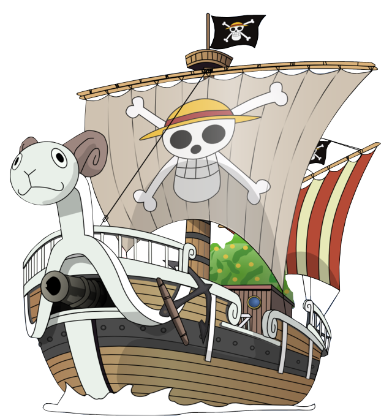

Para Mario
Que amistad tan rara, en un inicio yo era tu capitán, aunque te niegas a verme como luffy, recuerdo claramente el día que nuestra camaradería se convirtió en amistad y deseo nunca más llores de tristeza como ese día, ojalá a pesar de las adversidades que siempre conlleva estar vivo puedas vivir con alegría. ¿Te has preguntado alguna vez si ese día no hubiese estado allí? La verdad no me puedo imaginar un día sin tu amistad, ahora tengo muchos recuerdos, ver anime o películas, platicar cosas sin sentido durante horas, jugar ranks hasta terminar tilteados, y en días de incertidumbre cuando el futuro parecía abrumador tener a un hermano con el que poder reír y sentir la vida más ligera. Con personalidades tan diferentes nacieron malentendidos, pero fuiste quizá la primera persona en estar dispuesta a cambiar un poco para no herirme por eso tu amistad siempre será un tesoro encontrado por casualidad. Siempre peleamos por quien es Luffy y aunque mis ansias de libertad y que para algunos soy como el sol no es suficiente prueba para ti, tu cumpleaños está aquí por ello solo puedo dejarte el papel principal y tal como tú crees que soy, seré, ese verde intenso de Zoro, ese que para ti es la total lealtad. Es gracioso somos como dos hermanos peleando por quien apagara la vela del pastel, esta amistad es aislante fuerte en el que la lluvia no daño nunca el techo de la casa del árbol en la que nos escondemos cuando algo va mal y esperamos a que el otro venga con comida a visitar. Si todo esta en tu contra siempre tendrás un hermano dispuesto a oírte y acompañarte, aunque deseo nunca estes lo suficientemente triste como para esperar allí y que vengas siempre con gran felicidad. Feliz cumpleaños Mario.
